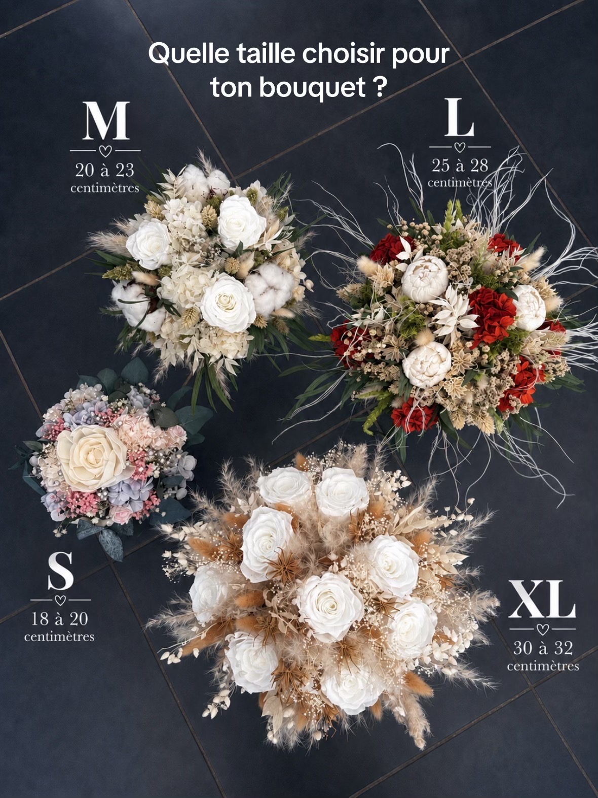
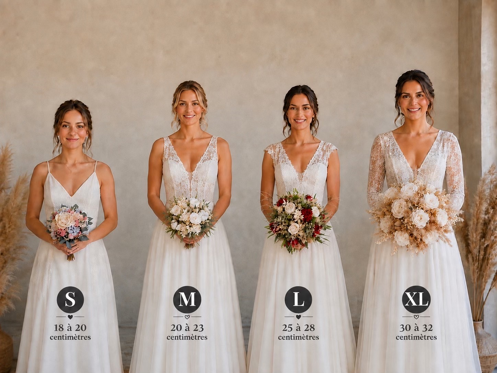

Imaginez votre bouquet de mariée 💍
Quelques clics pour définir l'ambiance de votre projet floral. Ensuite, transmettez-moi votre projet dans votre espace mariage personnalisé.
1. Quelle ambiance vous ressemble ?
Pour cette maquette, j'ai prévu les emplacements. Vos vraies photos de bouquets pourront ensuite remplacer ces visuels temporaires.
2. Quelle taille imaginez-vous ?
Retrouvez les mêmes visuels que dans votre espace mariage pour comparer les dimensions et le rendu porté.


18–20 cm
20–23 cm
25–28 cm
28–32 cm
32–35 cm
3. Et autour du bouquet ?
Sélectionnez ce qui pourrait vous intéresser. Rien n'est définitif à ce stade.
✨ Votre inspiration
Votre projet commence à prendre forme 🤍
Il ne reste plus qu'à me transmettre votre demande complète. Vous pourrez préciser vos couleurs, vos fleurs préférées, vos quantités et ajouter vos photos d'inspiration.
Je crée mon projet mariage 💍Vous serez dirigée vers l'espace mariage sécurisé de L'Atelier Fleurs & Sens.
Prototype configurateur • V7.5.13 TEST • Aucun changement de l'espace mariage actuel